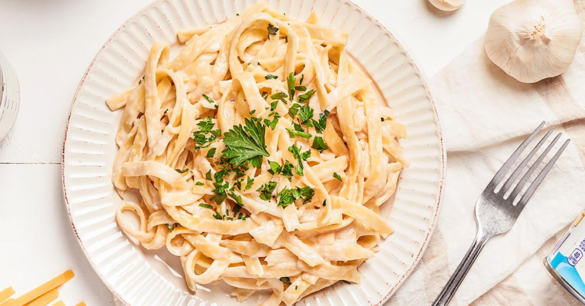

Información Nutricional
Preparación:
15 min
Cocción:
20 min
Porciones:
4
Dificultad:
Fácil
Ingredientes Frescos
- 400g de fettuccine de calidad
- 2 cucharadas de mantequilla sin sal
- 4 dientes de ajo fresco picados
- 2 tazas de crema espesa (35% grasa)
- 1½ tazas de queso parmesano italiano rallado
- Sal marina al gusto
- Pimienta negra recién molida
- 2 cucharadas de perejil fresco picado
- Nuez moscada recién rallada (opcional)
Instrucciones Paso a Paso
- Cocina la pasta: Hierve agua con sal abundante y cocina el fettuccine hasta que esté al dente (8-10 minutos). Reserva ½ taza del agua de cocción antes de escurrir.
- Sofríe el ajo: En una sartén grande, derrite la mantequilla a fuego medio-bajo. Añade el ajo y cocina 1-2 minutos hasta que esté fragante (¡no lo quemes!).
- Prepara la salsa: Vierte la crema espesa y lleva a ebullición suave. Reduce el fuego a bajo y cocina 3-4 minutos hasta que espese ligeramente.
- Añade el queso: Incorpora el parmesano poco a poco, removiendo constantemente con una espátula de madera hasta obtener una salsa cremosa y homogénea.
- Sazona: Agrega sal, pimienta y una pizca de nuez moscada. Prueba y ajusta la sazón según tu gusto.
- Combina: Añade la pasta cocida a la salsa y mezcla suavemente. Si la salsa está muy espesa, agrega un poco del agua de cocción reservada.
- Sirve: Reparte en platos calientes, espolvorea con perejil fresco y más parmesano rallado.
Secretos del Chef
✅ Queso de calidad
Usa parmesano reggiano auténtico para un sabor incomparable.
🔥 Control de temperatura
Nunca hiervas la salsa después de añadir el queso para evitar que se corte.
💧 Agua mágica
El agua de cocción de la pasta contiene almidón que ayuda a emulsionar la salsa.